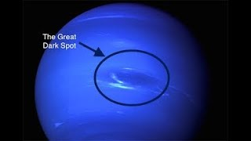

Temperature: Neptune is a cold planet due to its distance from the Sun. Its average temperature hovers around -214 degrees Celsius (-353 degrees Fahrenheit), making it one of the coldest planets in our solar system.
Time taken to travel: On average it takes about 12 years to travel from Earth to Neptune.
Scenery: Neptune's scenery consists of a dynamic and turbulent atmosphere with distinct cloud features. It has dark storm systems, including the famous Great Dark Spot and its successor, the Dark Spot 2, as well as bright and variable cloud formations.
Atmosphere: Neptune's atmosphere is primarily composed of hydrogen and helium, with trace amounts of methane, which gives the planet its blue color. It experiences strong winds, including the fastest recorded in the solar system, reaching speeds of up to 2,400 kilometers per hour (1,500 miles per hour).
Journey: Space missions to Neptune involve extensive planning due to the great distance. These missions often include gravity assists from other planets to gain speed and adjust the spacecraft's trajectory. To survive the extreme cold of Neptune, the spacecraft would require thermal insulation and heating systems to keep its instruments and systems operational.
Moons: Neptune has a diverse moon system, with 14 known moons. Triton is the largest and most famous of these moons. Triton is unique because it orbits Neptune in a retrograde direction, opposite to the planet's rotation, and it's thought to be a captured Kuiper Belt object.
Pressure: As with other gas giants, Neptune's atmospheric pressure increases significantly as you descend deeper into the planet. However, there is no solid surface on Neptune to land on; the planet's interior transitions from gas to a highly compressed, supercritical fluid.
Neptune is a fascinating ice giant in our solar system, known for its deep blue color and dynamic weather patterns.